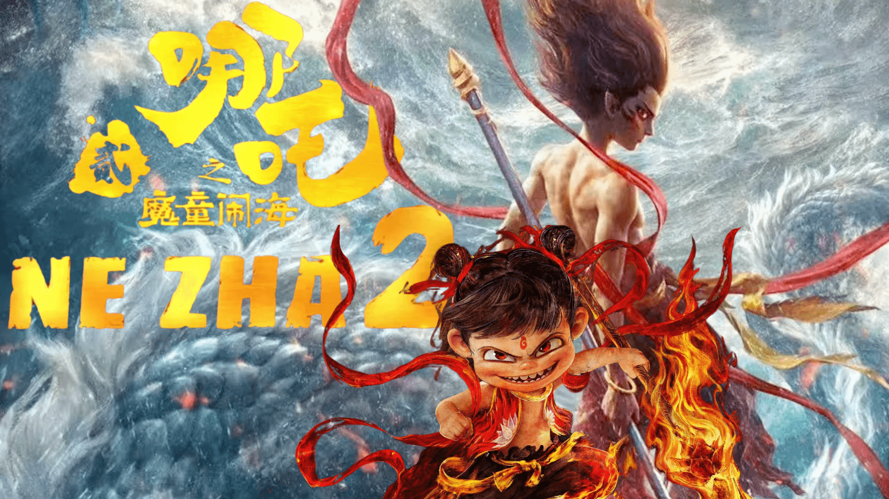
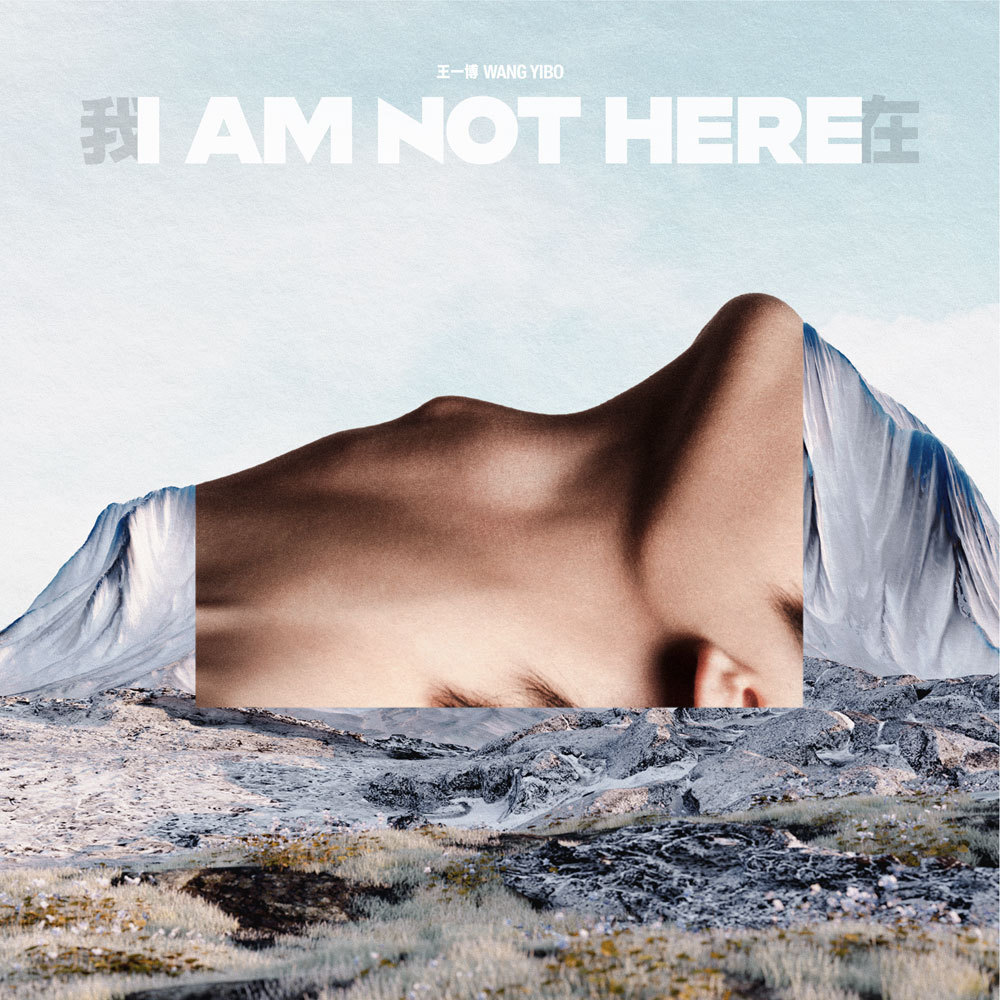
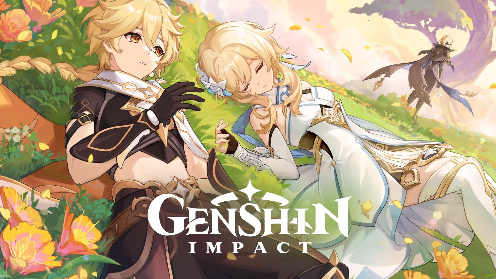

My Favorites 💖
Here are the things I love the most!
🎬 Movies
Hidden Blade

Nezha 2
🎭 Dramas

Legend of ZangHai
The First Frost
🎧 Music
漂流 – Xiao Zhan

我在 – Wang Yibo
🍰 Food
Sinigang
Toasted Siopao
🎮 Games

Genshin Impact
Minecraft
🌟 Artists / Actors
Xiao Zhan
Wang Yibo